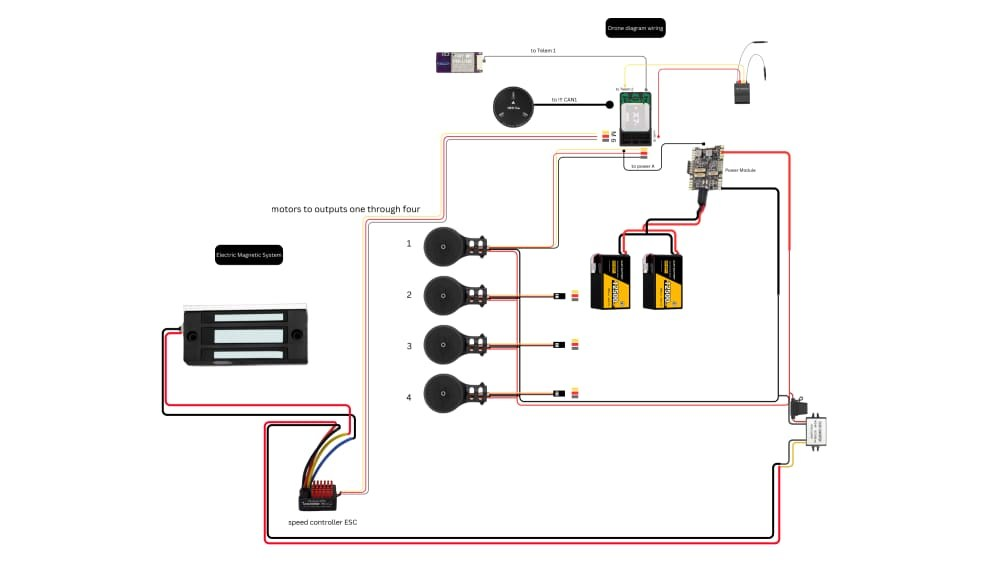

The full system: waterjet propulsion, autopilot navigation and onboard vision.
I worked on this USV from system architecture and component selection through electrical integration and water tests. The work connected propulsion, power, navigation and the operator interfaces as one platform.
I integrated differential-thrust waterjet control and autopilot navigation, together with FPV and AI detection using Jetson Nano and an A8C gimbal camera. Power work included ESC/BMS interfaces and pre-charge/main-contactor troubleshooting.
Investigating stability on a flying-wing QuadPlane
Configuration review, vibration analysis and flight-trial support for a 4+1 VTOL aircraft.
This engagement began with an unstable flying-wing QuadPlane. I rebuilt and reviewed the Pixhawk 6C and ArduPlane setup, including motor and servo assignments, calibration and QuadPlane settings.
I reviewed attitude tracking, IMU clipping, vibration and FFT data to connect the reported behaviour with the recorded response. That analysis informed configuration corrections and PID-tuning support.
Reviewing configuration, vibration and estimator behaviour without overstating the validation reached.
The supplied logs raised questions around position drift, altitude and yaw tracking. I reviewed swashplate and servo mapping, governor and RPM behaviour, motor interlock, failsafes, yaw response and power-bus data.
The diagnostic work also covered vibration and notch filtering, external INS and EKF3 configuration, and rangefinder settings. Each finding needed to connect a recorded symptom with a check or corrective recommendation.
Turning a fixed-wing concept into a workshop package
Organizing airframe geometry, interfaces and fabrication information so that a concept can progress toward a build.
The study developed a modular twin-tractor fixed-wing concept using accessible foam structures and tube reinforcement. I prepared parametric geometry, mechanical interfaces and assembly information around that approach.
The package included foam-cutting templates, CNC part information, tube-stock planning, assembly views, part lists and printable workshop guides. The aim was to connect the CAD model to an understandable build sequence.
From camera detections to a landing-target interface
Planning a Jetson Nano and AprilTag precision-landing proof of concept.
The proposal connected tag detection and pose estimation to a flight-controller interface. Camera calibration, target dimensions and coordinate transforms were explicit parts of the architecture, because a detected marker alone is not a usable control input.
I documented the MAVLink integration path, setup requirements and acceptance criteria. The accompanying illustrations show the proposed data path, pose-estimation checks and staged test plan.
My work linked the CUAV X7 autopilot, ArduRover configuration and dual VESC motor-control interfaces. The focus was the path between commanded vehicle motion and the motor controllers.
Motor control also depends on the communication and configuration around it. I worked on those interfaces alongside broader coordination and docking concepts.
Actuators, isolated power and autopilot trigger logic.

The docking architecture used four synchronized actuators. I developed the motor-driver and isolated power interfaces needed to connect that mechanism to the rest of the system.
The integration path combined CUAV X7+ AUX and RC-PWM interfaces with sensor inputs and MAVLink handshakes. This made the control handoff an explicit part of the proof of concept.
System architecture, engine interfaces and navigation planning.
I prepared the architecture and BOM around rudder and throttle control, power, safety equipment and navigation. The work included CUAV V6X and ArduRover configuration planning.
The documentation specified RTK, AIS, NMEA2000, companion compute and communications interfaces. Original engine, rudder and controller photographs provide physical context for the integration work.
Component compatibility, supplier research and build quantities.
I prepared equipment and component plans for 3-inch, 5-inch and 7-inch FPV configurations. Each configuration needed a coherent set of parts rather than a list of individually attractive components.
Four structured workbooks covered workshop equipment and the three aircraft configurations. They organized component options, compatibility questions, supplier research and production quantities.
Connectivity, interfaces and the source assets needed for handoff.
I reviewed schematic and PCB connectivity, interface routing, power questions and connectors with the engineer. The contribution was review and coordination around the design.
The handoff checklist also covered libraries, footprints and connector 3D models. Those source assets mattered to making the project portable and the correction list usable.
I configured the Mini Talon model and a virtual runway in Gazebo. The simulation connected to ArduPlane and QGroundControl so the aircraft model and mission workflow could be considered together.
The work included AUTO-mode waypoint missions and parameter checks. This provided a repeatable environment for examining mission preparation before physical flight work.
Propulsion, control interfaces and equipment planning.
I compared propulsion and control-system options while organizing equipment interfaces. The goal was to develop a coherent preliminary system study.
Supplier-linked material, an equipment comparison, a planning cost model and a technical presentation supported the handoff. Vessel equipment was kept distinct from reusable workshop and test tools.
Log analysis, interface discussion and comparative tuning.
I provided log-analysis and configuration support, with comparative Pixhawk-based tuning experiments to inform the troubleshooting discussion.
The work considered Raspberry Pi and barometric-data interface options. The client implemented the custom firmware and reported bench operation of the virtual barometer.
I reviewed PID and rate tracking alongside motor imbalance, vibration, clipping, estimator and compass faults, GPS behaviour and battery response. The work connected symptoms across the aircraft systems.
Remote discussions with the test team combined log findings, filter and PID recommendations, configuration checks and follow-up review. The support also included separate Matek H743 and CUAV X7+ platform engagements.